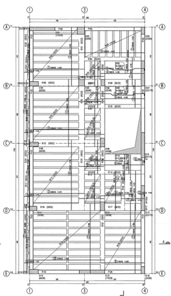
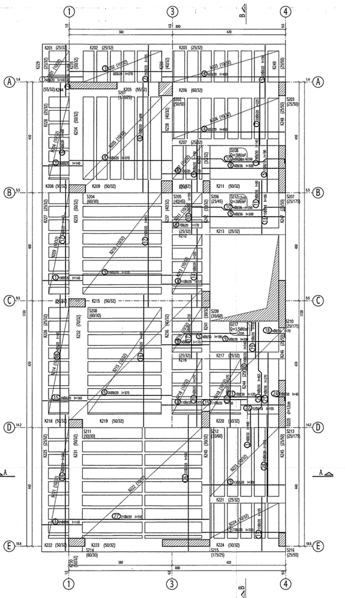
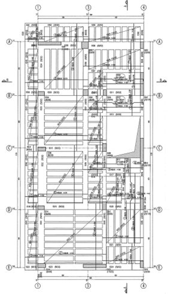
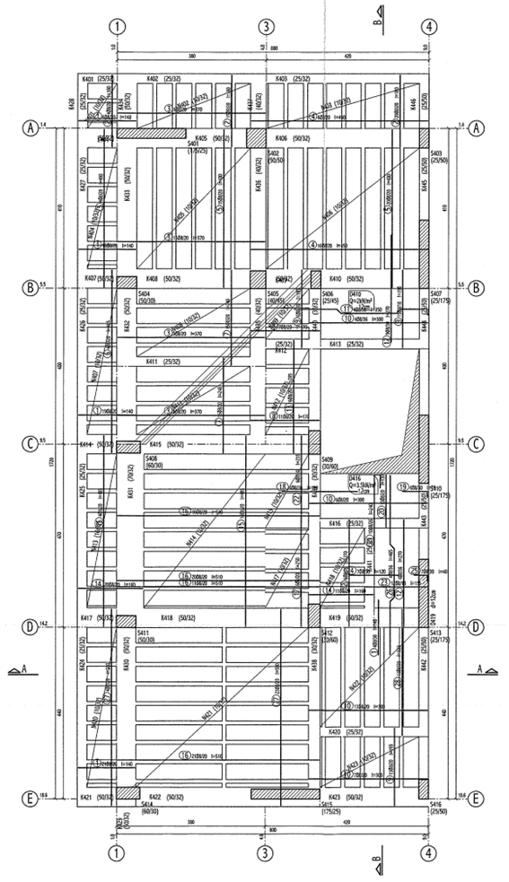
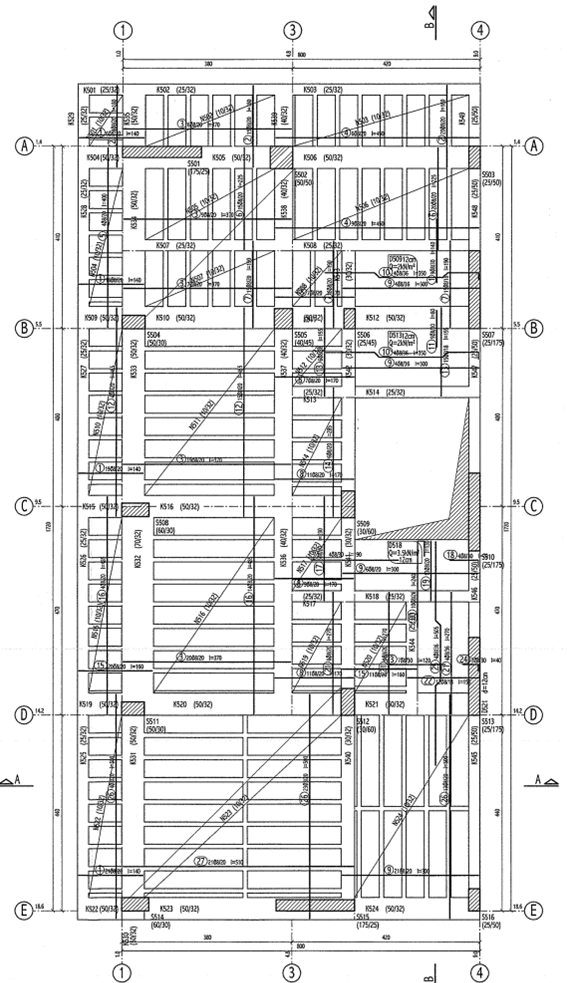
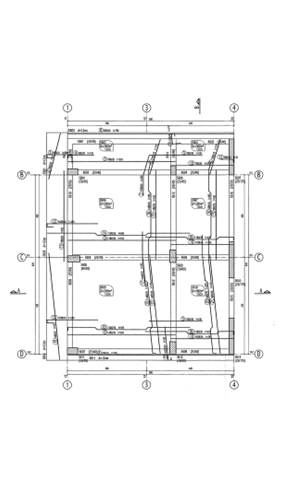
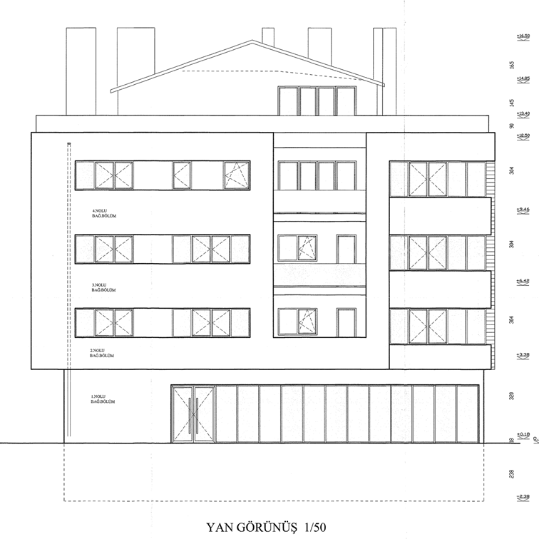
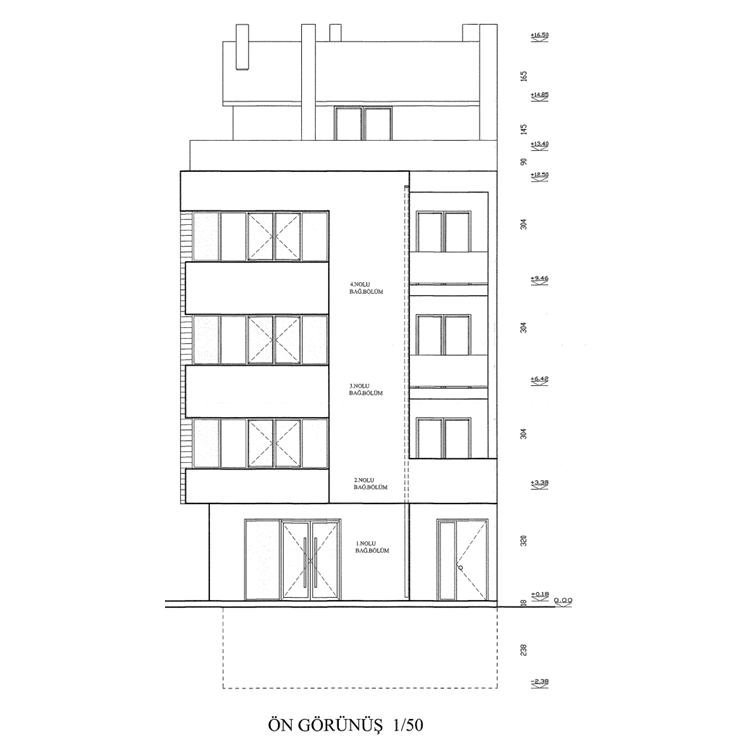
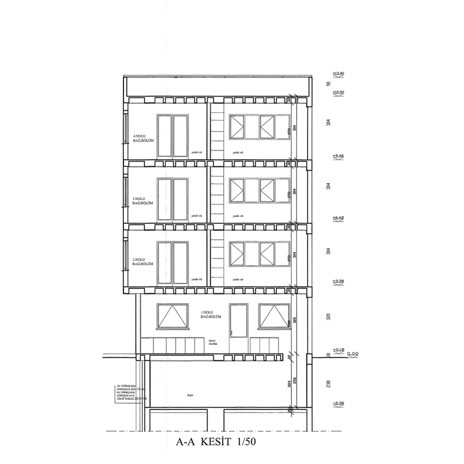

Bina Kimliği
| Kullanım Amacı | Konut — BKS-3 |
| Yapım Yılı | 2013 |
| Taşıyıcı Sistem | Perdeli Betonarme Çerçeve |
| Kat Düzeni | Bodrum + Zemin + 3 Normal Kat |
| Beton Sınıfı | C20 (Mevcut Ortalama) |
| Donatı Çeliği | S220 / S420 |
| Bilgi Düzeyi | Kapsamlı — BDK = 1.0 |
Kat Planları
Bodrum Kat

Zemin Kat

1. Normal Kat

2. Normal Kat

3. Normal Kat

Çatı Katı

Çalışmanın Amacı
- Mevcut taşıyıcı sistemin yapısal davranışını tespit etmek
- TBDY 2018 Bölüm 15 kapsamında deprem performansını değerlendirmek
- DD-2 yer hareketi altında beklenen performans düzeyini belirlemek
- Zayıf elemanları ve hasar kaynaklarını ortaya koymak
- Uygun güçlendirme yöntemlerini önermek ve boyutlandırmak
- Güçlendirme sonrası performans iyileşmesini doğrulamak
Teknik Parametreler
Zemin Sınıfı
ZD — Orta Sıkı / Sert Kil
Deprem Düzeyi
DD-2 — 50 yılda %10 aşılma
Perf. Hedefi
Kontrollü Hasar (KH)
Analiz Türü
Doğrusal Olmayan Artımsal İtme (Pushover)
Yazılım
SeismoStruct — Fiber Kesit Modeli
TBDY 2018
Bölüm 15 — Mevcut Binaların
Değerlendirilmesi ve Güçlendirilmesi
Değerlendirilmesi ve Güçlendirilmesi
Kesitler & Cephe
1-1 Kesiti

2-2 Kesiti

Cephe Fotoğrafı

Çalışma Kapsamı
Literatür araştırması
SeismoStruct ile yapısal modelleme
Deprem performans analizi
Yetersizliklerin tespiti
Güçlendirme tasarımı
Güçlendirilmiş yapı analizi